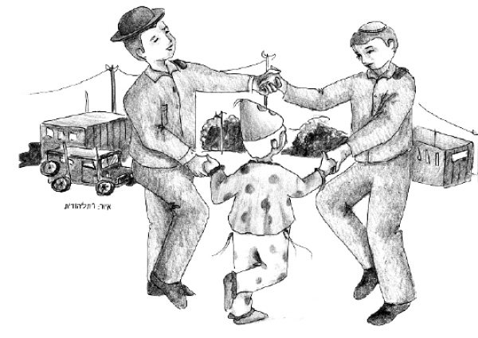

Mivtzaim Experience
Hi, I’m Berel. Although two weeks have gone by, I think I can still tell you about my Purim experience. Ready?

Purim is a day when we send mishloach manos to friends and receive mishloach manos in return, we make noise in shul when the Megilla is read, and we are busy with costumes.
This year, my brother Mendel made me an interesting offer. “Berel,” he said to me with a serious look on his face, “I think you are old enough already, and can come with me on mivtzaim on Purim. What do you think?”
At first I was thrilled. Going along on mivtzaim with the “big bachurim,” Mendel’s friends, is something I had always dreamed about. But on second thought, I was unsure.
Won’t I be embarrassed? What will people think of me? They would not understand what a little boy is doing with the older boys … Aside from that, was it worth losing out on all the experiences I usually have, the nosh that would come to the house and all the rest?
Mendel saw I was hesitant and he said, “Think about it and let me know what you decide so I can reserve a place for you in the van.”
What would you advise me to do? You would probably tell me to go on mivtzaim, without thinking twice about it, but it wasn’t so easy for me to decide.
In the end, as you must have figured out, I decided to go ahead in order to give the Rebbe nachas. Mendel was happy to hear of my decision and he reserved for me a place in the van.
Purim arrived and I happily walked to the van together with Mendel. All the bachurim were happy to see me. They enjoyed the idea of a little boy joining them and started singing a lively Purim tune. Our destination was various army bases where many soldiers were eagerly waiting to hear the Megilla and to do the mitzvos of the day.
As we approached our first destination, we divided into teams. At my request, I joined Mendel, but suddenly problems arose. “Oy,” Mendel tapped his forehead as he turned to me. “I am sorry I did not tell you ahead of time. You won’t be able to enter the second base with me because they do not allow a child of your age to go in.”
I instantly began regretting that I had chosen to go on mivtzaim with Mendel. “That’s a big brother,” I thought, “who abandons me?”
“But Berel,” Mendel tried to reassure me, “it’s okay. You just won’t be able to enter one base and instead of that, you will join another nice team.”
I felt bad even as I joined the other team. As the gate closed behind us, one of the bachurim suddenly said, “This base is bigger than we thought, and we cannot reach them all with one team. What should we do?”
I was deep in thought and did not notice when the two bachurim stopped walking. I walked by myself into the base. I held a big bag of mishloach manos and thought longingly of what was going on at home.
The two bachurim noticed my absence only when I was no longer visible. I felt scared. What should I do? Where would I find them? Now I was completely sorry that I had not stayed home.
I sat down on a rock feeling miserable. Suddenly, I had a brainstorm. I remembered what the chubby bachur had said, “We cannot reach them all with one team. What should we do?” I had a responsibility! If I did not make the rounds of this part of the base, the soldiers here would not fulfill the mitzva of mishloach manos and matanos la’evyonim!
I looked at the bag of mishloach manos and the coins for matanos la’evyonim and wondered, “Can I do it? Maybe the soldiers won’t pay attention to me, to a little, shy boy?
But responsibility is responsibility and I decided to get to work. The first ones I met was a pair of soldiers who were sitting in an odd looking building. “Hi, Purim Sameiach!” I called out to them.
“What?” said one to the other. “Am I seeing straight? A Chabadnik boy came to give us mishloach manos? I must get one from him!”
Their enthusiasm at seeing me was contagious. I went over to them happily and gave them mishloach manos. After they exchanged it amongst themselves, I gave them some coins which they put into a matanos la’evyonim pushka. Then the three of us danced. This scene repeated itself more or less wherever I went and the soldiers were very excited.
When I finally returned to the entrance of the base, I met the two bachurim. They were very happy to see me looking happier than before. When we were back in the van and I told Mendel what happened, he took out a sicha from the Rebbe and showed me what my story reminded him of.
“The Rebbe says that every Jew, even a little boy, has the responsibility to bring the Geula. Someone can think that he is not able to and the responsibility is too much for him, but even he needs to know that you cannot shirk the responsibility. Actually, in a situation where it is difficult, we get additional strength to be able to do the job.
“See Berel?” continued Mendel enthusiastically, “When you began taking action, you were more successful than the two bachurim who were with you. So let’s go to the other bases and together, we will do the job we were assigned: to prepare the world to greet Moshiach!”
Beis Moshiach (staff). "Mivtzaim Experience." Beis Moshiach, no. 921 (March 25, 2014).